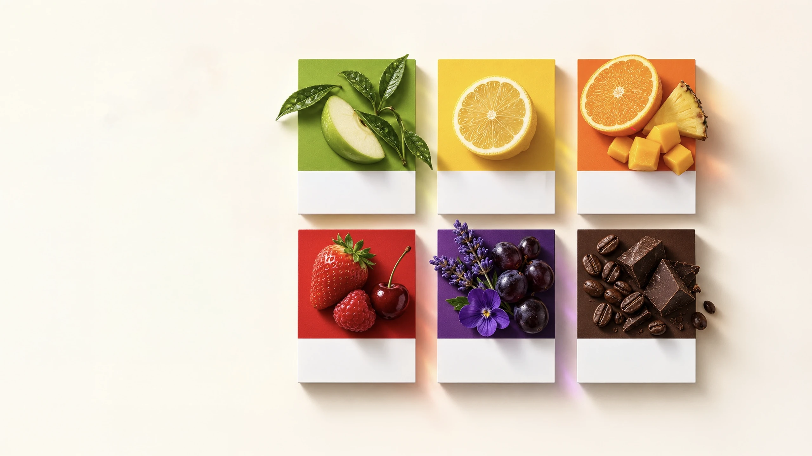
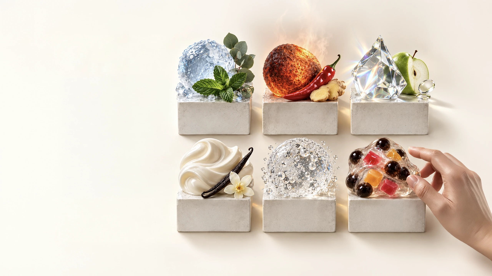
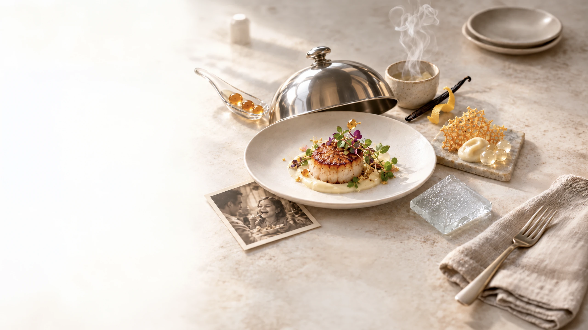

Can you taste
a color?
What we see can change
what we expect to taste.
Color shapes expectation.
Expectation shapes taste.
In sensory design, visual cues can make a flavor feel fresher, warmer, richer or more comforting before the first sip.
PANTONE 376 C
Green
Fresh · Natural · Clean · Calm
PANTONE 123 C
Yellow
Bright · Citrus · Light · Cheerful
PANTONE 1585 C
Orange
Warm · Tropical · Juicy · Energetic
PANTONE 485 C
Red
Sweet · Bold · Ripe · Intense
PANTONE 2592 C
Purple
Rich · Floral · Mysterious · Luxurious
PANTONE 4695 C
Brown
Roasted · Comforting · Indulgent · Deep

Can you feel
a flavor?
Flavor is more than taste.
It is a full-body sensation.
Some flavors cool. Some warm.
Some brighten, soften, sparkle or satisfy.
Sensation makes flavor come alive and turns consumption into experience.
Cool
Menthol / Eucalyptus
Cooling sensation that refreshes.
Hot
Chili / Ginger
Warming stimulation.
Sharp
Vinegar / Green Apple
Bright tingling.
Creamy
Milk / Vanilla
Smooth and rounded.
Fizzy
Carbonation
Lively and exciting.
Chewy
Boba / Jelly
Playful and satisfying.
This is
synesthesia.
When senses connect,
experience changes.
Taste
What we taste is shaped by more than taste alone.
See
Vision sets expectation.
Smell
Aroma triggers memory and emotion.
Touch
Sound, touch, and texture reshape perception.
Feel
In synesthesia, these sensory signals blend into one experience.
- See
- Smell
- Touch
- Taste
- Feel
- Hear

What makes
something
delicious?
Deliciousness is a
multisensory experience.
Each element plays a vital role.
But deliciousness emerges only when they work in harmony—in the right balance, at the right moment, for the right person.
- 01Taste
- 02Aroma
- 03Texture
- 04Temperature
- 05Expectation
- 06Memory
Taste × Aroma × Texture × Temperature
Expectation + Memory
= Delicious experience